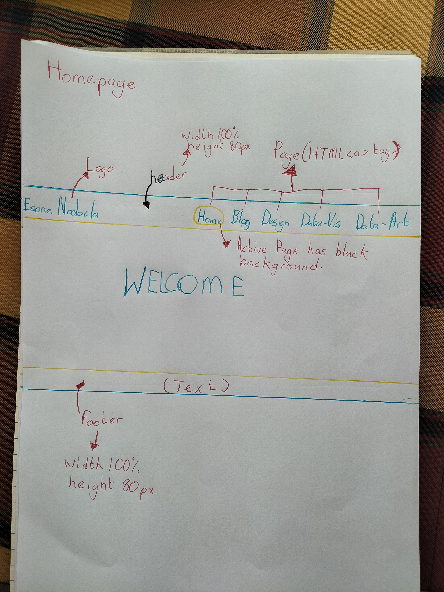
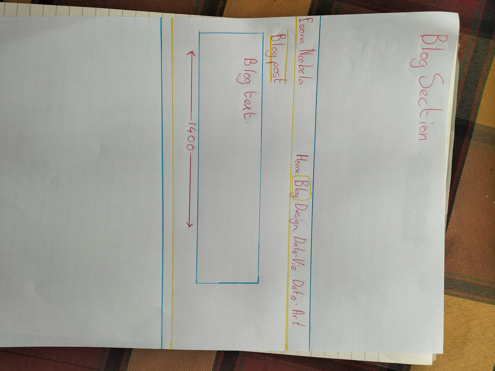
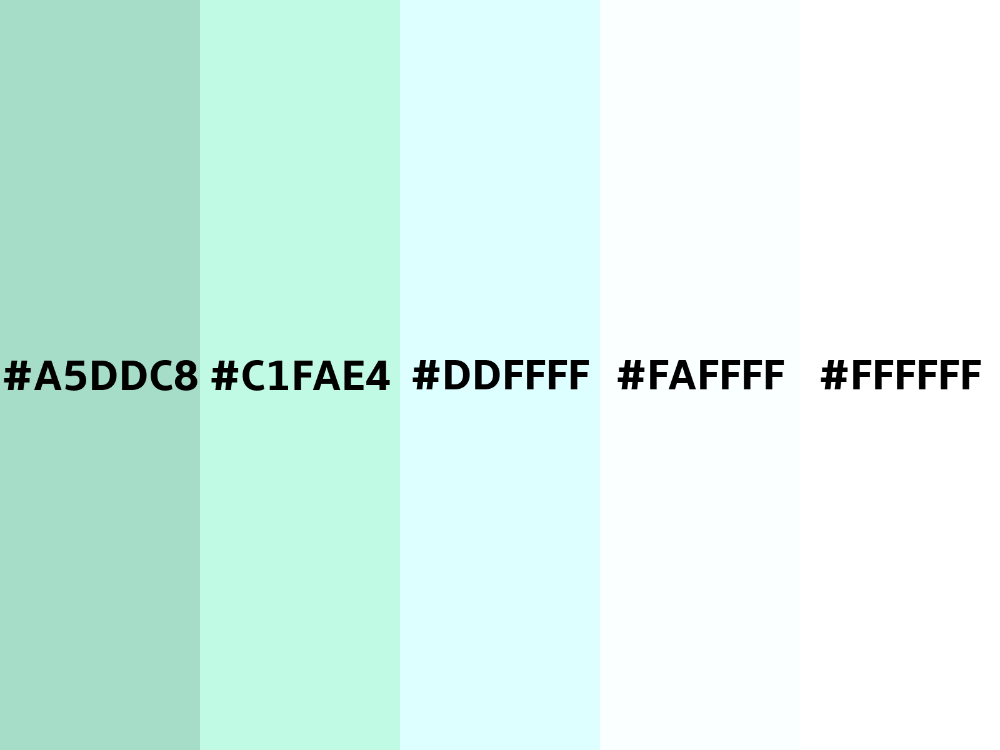

Design Section


Style Guide
Logo- font-family: 'Franklin Gothic Medium', 'Arial Narrow', Arial, sans-serif;
Main- font-family: 'Times New Roman', Times, serif;
Header background - color: rgba(26, 112, 120, 0.529);
Footer background - color: rgba(255, 255, 255, 0.125);
Logo - color: rgb(255, 255, 255);
nav ul li a - color: ghostwhite;
a.active - background: rgba(0, 2, 3, 0.663); color: white;
.e-content - background-color: rgba(165, 221, 200, 0.739);
.heading - text-decoration-color: rgb(255, 0, 255); text-decoration-color: rgb(255, 0, 255);
.subheading - color: rgb(255, 255, 255);
.Content - color: rgb(255, 255, 255);
.Content h1 - color: rgb(247, 83, 28);
position: relative;
min-height: 100vh;
padding-bottom: 2.5rem; (Footer height)
width: 1400px;
What's New
.png)
style-guide

Aesthetically, the aim is to stick to colors that blend well with the background. rgba(8, 130, 124, 0.656) for me has the perfect tone and contrast that compliments the blue sky in the background image. It fits the blue theme and goes well with black text. The primary function of the orange color (in the welcome and button texts) is to stand out. Its primary function is to attract the user’s attention, as this is important because it effectively communicates the message to the user. i.e., welcome to my homepage or this is a clickable button. black and white text that’s standard for content information.
Following the feedback given, I have made major design and technical changes for this assignment. Starting with the font size, the heading is now bigger than ever; two times bigger to be exact. This is the appropriate size; it’s big and stands out. The font size in the content box has also been increased to accommodate the new heading font size. This was done to find the perfect balance between heading and content font size.
As requested in the feedback, I have given the web buttons enough space (padding) in between them so as to not shift or displace them when hovering over them. The major change again is the speed scroll button in the centre of the blog webpage section. What this button does is fast track the user to the latest blog post. Now instead of scrolling all the way down, they can use this button instead. Technically, I have adjusted the size and position of images. Now placed centrally and slightly increased in size. The footer is now bigger, and I've removed the
that was used to keep the footer in place.
The aim is to create a bar graph using d3.js. I used the online tutorial as my guide and blueprint. The information I chose to display is a graph of Facebook users versus African countries. This was a spontaneous move, and it was fueled by the fact that the information wouldn’t be hard to find. The outcome is one graph. I struggled with making the second graph. It wouldn’t appear even with a new JS script. The upside to all of this is that the first graph is fine and displays the information correctly as intended.
Planning documentation
Objective: Produce two static data sets discussing social media applications across the African continent using JavaScript and HTML coding
Execution: 2 graphs were produced using JavaScript. Graphs one and two express African social media usage
Objective: Produce a responsive data set using JavaScript and HTML coding.
Execution: Graph three is an interactive graph that users can hover over to access numerical information regarding the data set.
Objective: Represent data in an artistic visual manner using both CSS and JavaScript.